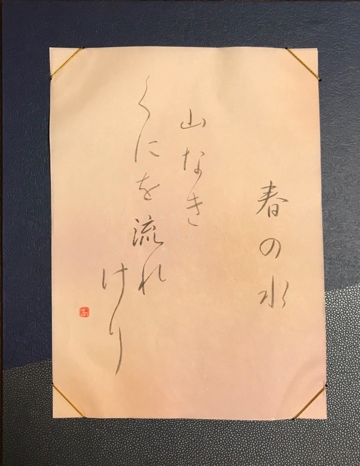

仮名とは

記録を残す際、漢字を使って中国語の構文、すなわち漢文で書いていたが、地名や人名などの固有名詞は漢字の意味を無視して音だけを借りる、言わば当て字で表記していた。これを借字（しゃくじ）といい、一般的に万葉仮名（まんようがな）と呼ばれている。
長らく万葉仮名が使われていたが、一音一音に逐一画数の多い漢字を書くのは時間がかかる。そこで、漢字を徐々に簡略化（草書化）していく。平安時代に入るとさらに簡略化されるようになり、生まれた文字こそが、現代も使われている平仮名（ひらがな）である。
引用コンテンツ
引用元：かな書道とは